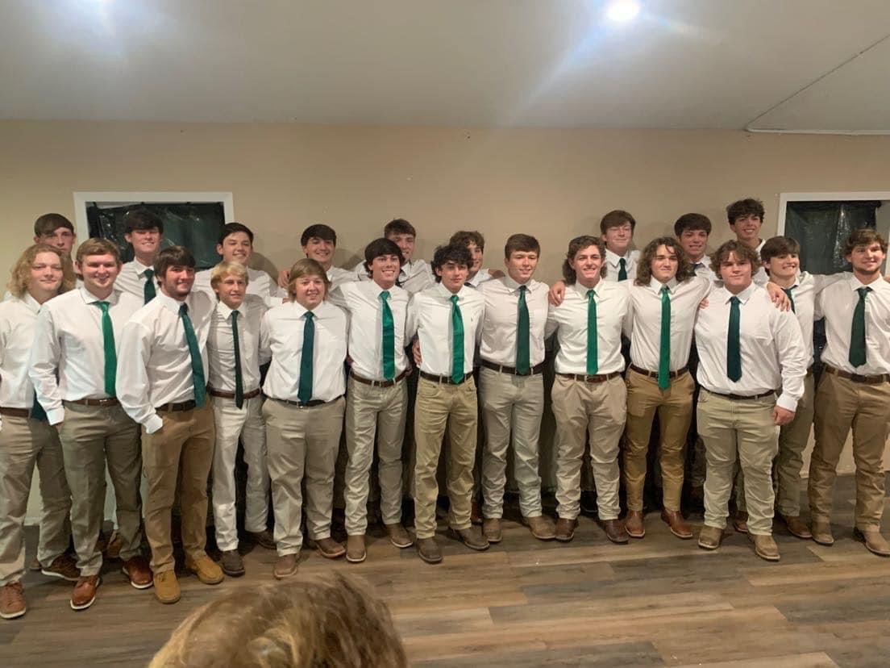
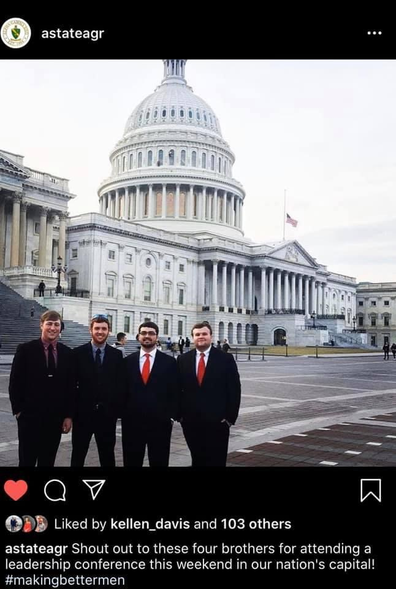

01
Connect
Meet fellow students who share interests in agriculture and professional growth.
ARKANSAS STATE UNIVERSITY · CHARTERED 1973
Building better men and a stronger agriculture through lifelong brotherhood, service and leadership.
WELCOME TO BETA EPSILON
The Beta Epsilon Chapter of Alpha Gamma Rho brings together undergraduate and alumni brothers who share a connection to agriculture, leadership and Arkansas State University.
Chartered at Arkansas State University in 1973, Beta Epsilon is listed as an active chapter by the national fraternity. Our chapter connects current undergraduates and alumni across generations through agriculture, service, and lifelong relationships.
READ OUR CHAPTER HISTORY
New members of the Beta Epsilon Chapter at Arkansas State.
View chapter photo album ↗And through them a broader and better agriculture.
Relationships spanning undergraduate life and alumni generations.
Academic, personal and professional growth through responsibility.
Service and advocacy within agriculture and related industries.
OUR ROOTS
Beta Epsilon was chartered at Arkansas State University in 1973. The national fraternity continues to recognize Beta Epsilon as an active chapter.
Our history includes the late founding brother Terry Gairhan, whose gift of a longstanding game-day tailgate location was recognized by national AGR in 2021. Read the national AGR account ↗
EXPLORE OUR CHAPTER ARCHIVE →JOIN THE BROTHERHOOD
As a social and professional agricultural fraternity, AGR combines meaningful friendships with opportunities to develop character, leadership and career connections.
Meet fellow students who share interests in agriculture and professional growth.
Build leadership, communication and service experience through the fraternity.
Establish connections that continue throughout your career and life.
BETA EPSILON IN PHOTOGRAPHS
Only authentic, authorized Beta Epsilon images will appear on this website. The album link below is the source supplied for the gallery.


CHAPTER LEADERSHIP · WASHINGTON, D.C.LEADERSHIP BEYOND CAMPUS
Agriculture needs people who can communicate, lead teams and contribute to their communities. Beta Epsilon's brotherhood extends beyond campus and into professional and civic life.
Our photo archive documents four chapter brothers participating in a leadership conference in Washington, D.C. That kind of experience reflects the leadership development and connections AGR encourages.
FOR OUR ALUMNI
Whether you are a recent graduate or a brother from the chapter's earliest years, Beta Epsilon's alumni and undergraduates belong to the same community.
MEMBER PORTAL INFORMATION →Our history connects us. Our brotherhood carries it forward.
Beta Epsilon Chapter · Arkansas StateA SECURE CHAPTER COMMUNITY
Undergraduate and alumni members will share one protected membership system, using individual accounts and the same general-member access privileges.
Provide your name, email, mailing address and phone number.
Your request goes to the private tracking Sheet and chapter administrator.
The chapter verifies membership independently.
Approved members receive instructions for creating secure sign-in credentials.
Member access: Member account requests are reviewed by chapter administrators before any private access is granted. Account credentials and verification are handled separately. Private chapter resources and member-only discussion links are not available on this public website.
CHAPTER NEWS
Our public announcements and chapter news will appear here as they are confirmed. Member-only discussions and private chapter social links require an approved account.
MEMBER NEWS · SIGN IN →In September 2025, Beta Epsilon and Alpha Iota brothers joined for a historic Arkansas State–Arkansas football game. The national fraternity featured the joint tailgate and the lifelong connections it celebrated.
READ THE NATIONAL AGR STORY ↗CONTACT THE CHAPTER →Our traditions, our relationships and our shared commitment to agriculture remain the foundation of Beta Epsilon.
GET IN TOUCH
Select the purpose of your inquiry and complete the form below. All public questions, including recruitment, chapter history, alumni and general AGR inquiries, are recorded in the private chapter Google Sheet for follow-up. This form is separate from requests for member portal accounts.
Press Submit to send your inquiry. A confirmation will appear only after the question is successfully recorded. No email application or Facebook account is needed.